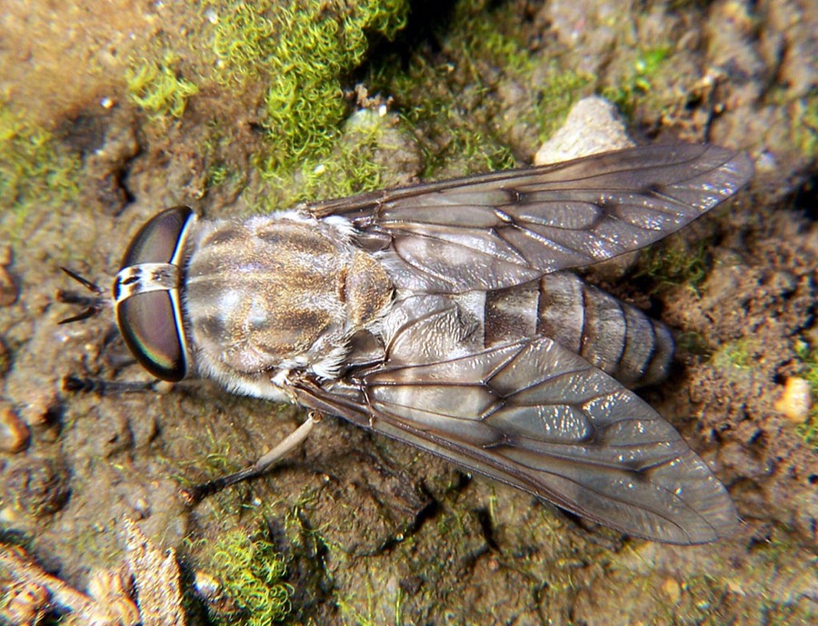
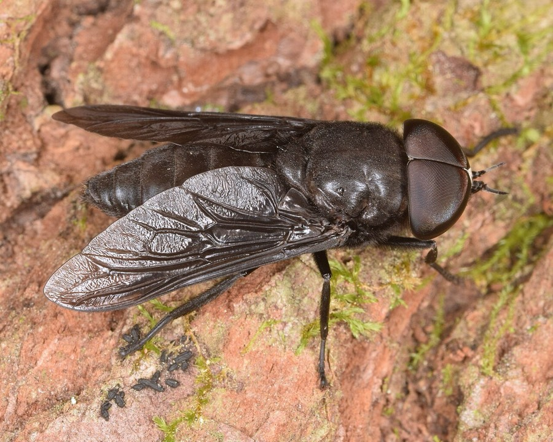

Horse Flies
Tabanus, Hybomitra
- Also called
- Horseflies, Tabanus, Hybomitra
- Kind
- insect
- Native to Vermont
- yes
- Legal status
- Not regulated. (checked 2026-11-01)
Pictures


Names
Horse flies (genera Tabanus and Hybomitra), the larger blood-feeding flies of the same family as the deer flies (Deer Flies). The number of species in Vermont is not stated in the sources read.
Range and habitat
Not stated for Vermont. The Wisconsin sheet says the biting females are most abundant near swamps and marshes, along pond and stream banks and at the edge of wooded areas, and that adults rest in tall grass or on leaves and wait for hosts to pass.
How to identify (by season; look-alikes and the key difference)
The Wisconsin sheet: larger than deer flies, with some species (for example the black horse fly) reaching two inches; the smaller species are black or gray and often have brilliant green eyes. The photographs show a gray-brown horse fly with big dark eyes (Illinois) and an all-dark black horse fly (Georgia). A deer fly is smaller, with yellow and black stripes and dark-marked wings.
Through the year
Dates are typical for Vermont and shift with elevation and year; "approximate" means the source gave a season and the dates are a translation of it.
| When | What | Look for | What to do | Dates |
|---|---|---|---|---|
| Jun 1 to Aug 31 | flight (watch) | Horse flies and deer flies can be active from May until September (University of Wisconsin sheet, written for Wisconsin); the larger horse flies are on the wing in summer. | Keep horses, cattle and dogs near shelter; see the prevention note. | approximate |
Signs on the land (tracks, scat, browse, nests, holes, calls)
The fly itself, circling a person or an animal. The sheet says the females' blade-like mouthparts make a deep, painful wound that bleeds considerably.
Role in the forest (what it eats, what eats it, what it needs)
Only females bite, and they take blood from large animals (livestock, deer, people, dogs). The sheet says the largest species attack horses and cattle, but not people. The immature stages live in wetlands: eggs in compact masses on overhanging plants or wet soil, and larvae, which may be predators or vegetarians, in moist or wet organic matter. Most species have one generation a year, and the larger ones take up to two years.
What helps it thrive (not something to encourage; this is what it needs, so you know where it is)
Wetland breeding places (the sheet) and large animals to feed on. The sources read say nothing about Vermont habitats.
Managing for it (habitat practices) and living with it (conflicts and damage)
No satisfactory chemical control (University of Wisconsin): treating the breeding wetlands is environmentally unacceptable and residual and fogging treatments do not work. For pets and livestock the sheet advises shelter such as a barn, shed or doghouse; insecticide sprays on the animals do not work because the flies land too briefly. It says the flies are attracted to dark moving objects and carbon dioxide, and describes a dark ball trap. Some people develop fevers, severe sores or allergic responses to the saliva, and the sheet says diseases such as anthrax and tularemia have been associated with these flies around the world but have not been a major problem in Wisconsin. See Preventing Tick and Biting Fly Bites in the Woods for what to wear, what repellents the sources name and when the flies are active.
Legal status
None found.
Sources
- University of Wisconsin Extension, Deer Flies and Horse Flies: https://hort.extension.wisc.edu/files/2014/11/Deer_Flies_and_Horse_Flies.pdf (read as text 2026-11-01)
What this page is based on
Kind of source: primary-agency and extension (read through summarizing fetches and one text read)
What was read: University of Wisconsin Extension 'Deer Flies and Horse Flies' (Garden Facts XHT1049, read as text, 2026-11-01): identification, habitat, life cycle, control. Written for Wisconsin in 2004; no Vermont horse fly source was found, and the Vermont Public article on deer flies (summarizing fetch) says nothing about horse flies beyond a size comparison. The summer window is an approximation from the sheet's May to September range, not a Vermont record. The photographs are from Illinois and Georgia.
Last checked: 2026-11-01
Vermont land and forest reference, built 2026-11-05. Rules and dates here are summaries, not legal advice; dates shift with elevation and year. Photo and recording credits · Note: _reference/US-VT/Species/Horse Flies.md